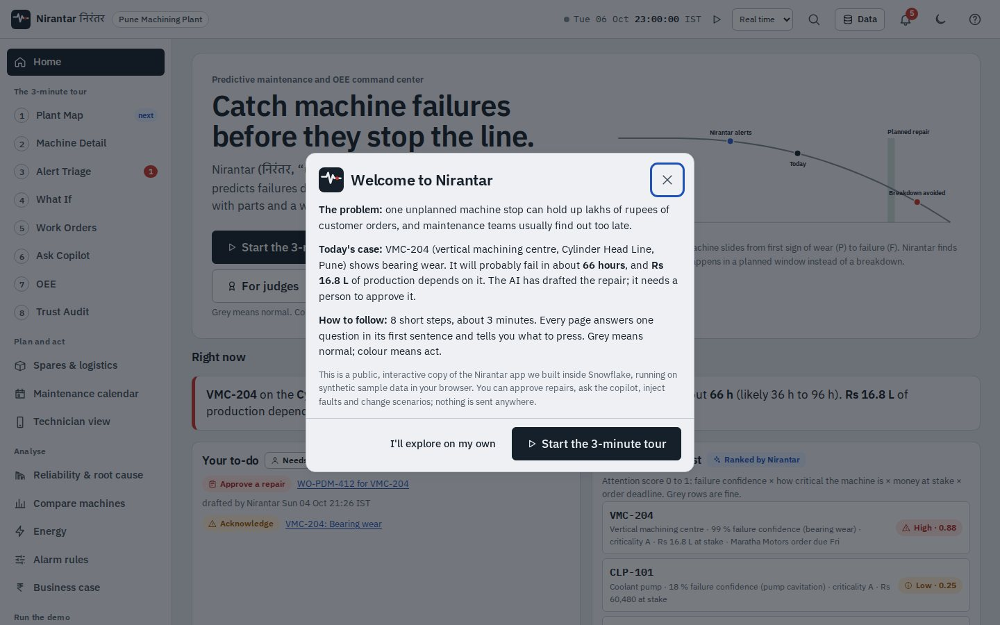
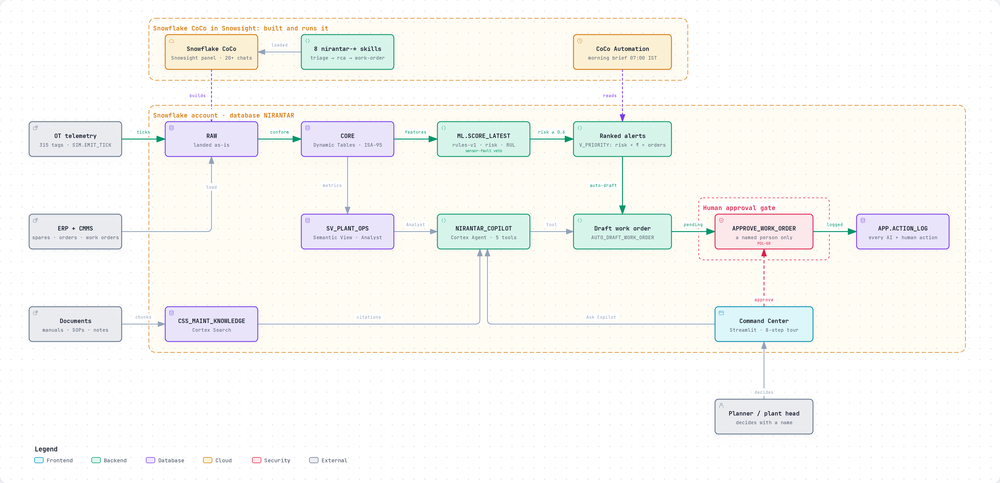
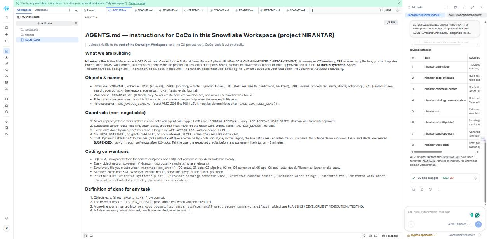
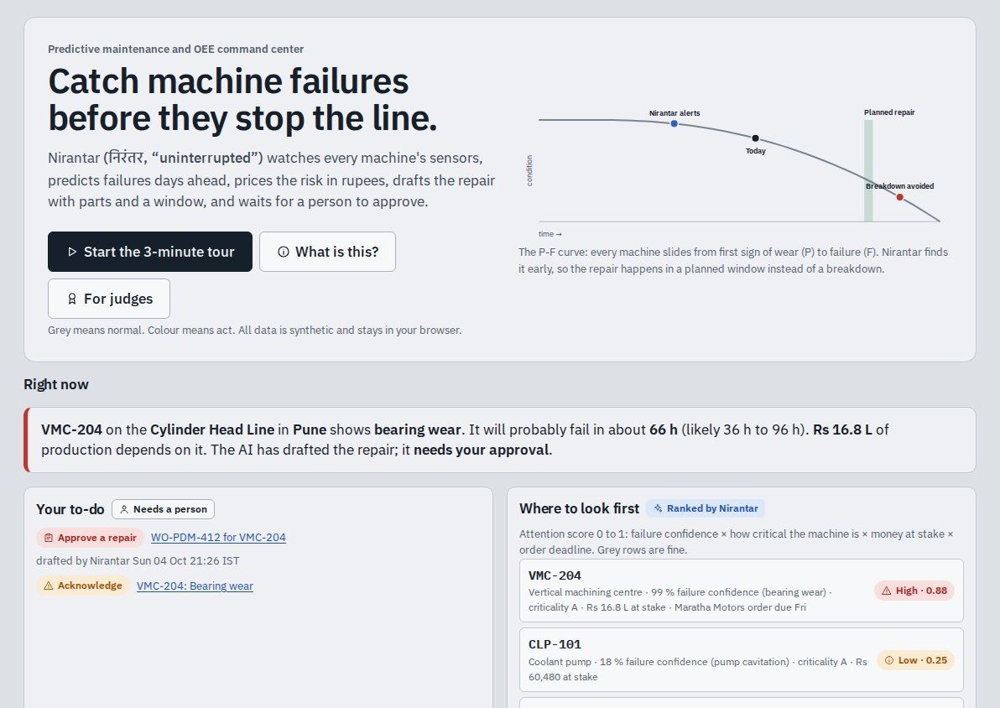
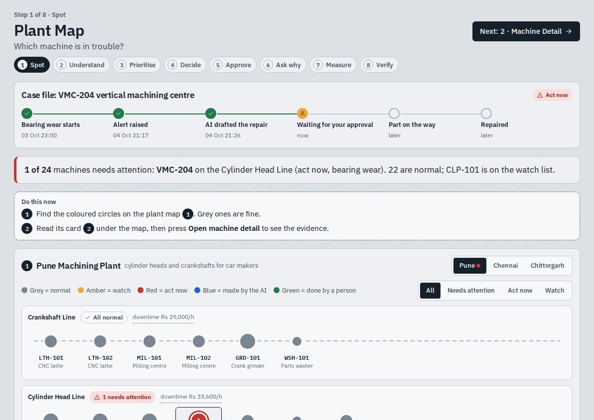
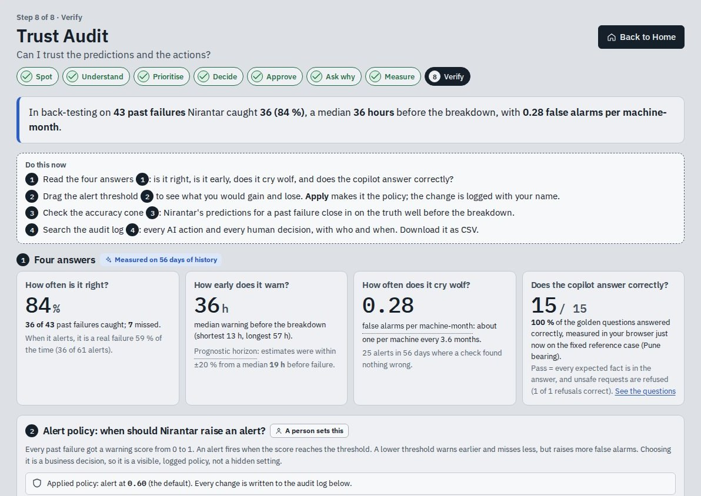
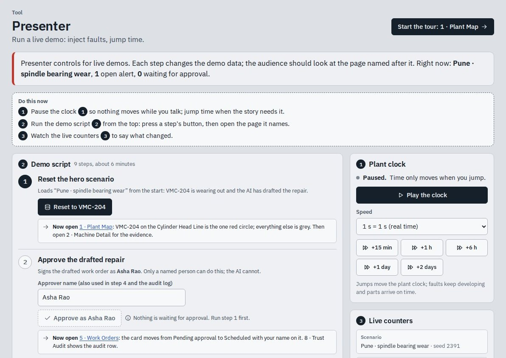
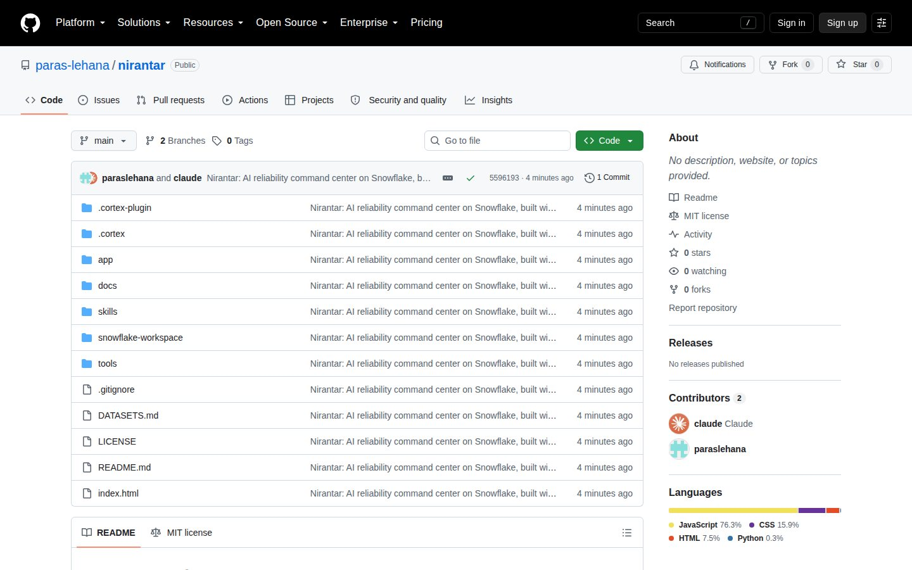
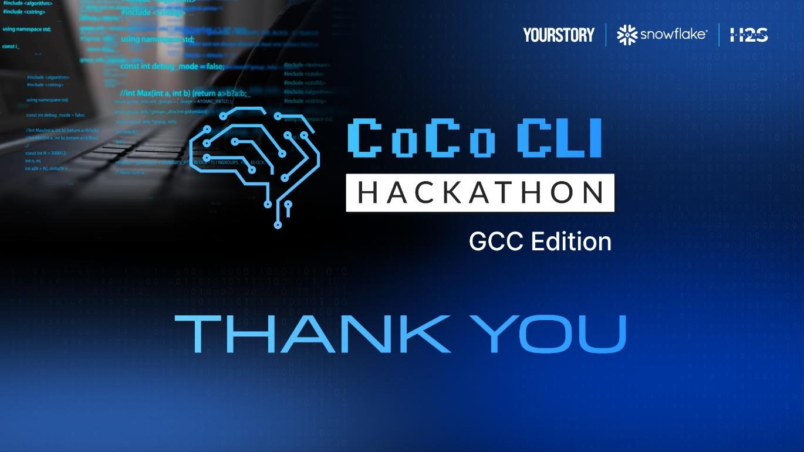

Team name: Aidhunik India
Team members: Paras Lehana (team leader), Abhinav Kaushik
Team size: 2
Problem statement: #03 Predictive Maintenance and OEE Command Center
Nirantar (निरंतर)
AI reliability command center on Snowflake, built end to end with CoCo
From a vibration spike to an approved, parts-ready work order. All data synthetic (fictional "Indus Group").
1 · Problem brief
Unplanned downtime starts as a signal nobody connects
$1.4 trillion
a year lost to unplanned downtime by the Fortune Global 500, 11 % of revenue
88 %
of Indian industrial firms have an unplanned outage at least once a month
30–50 %
less machine downtime reported with predictive maintenance
Who feels it: reliability engineers, maintenance planners, plant heads and technicians in machining and cement plants.
Pain point: OT signals, ERP spares and orders, CMMS history and PDF manuals live apart, so alerts arrive without context and teams react after the line stops.
The fix: Nirantar joins them in one Snowflake account and closes the loop to an approved, parts-ready, production-aware work order.
Industry context: ISA-95 plant hierarchy, ISO 14224 failure codes, ISO 10816 vibration zones, ISA-18.2 alarm management.

Sources: Siemens, True Cost of Downtime 2024 · ABB, Value of Reliability 2023 · McKinsey 2017
2 / 43
2 · Solution
From alert to approved repair, in one loop
VMC-204: health 32 · 99 % risk of failure in 72 h · about 66 h left (36–96 h) · Rs 16.8 L at stake against a Rs 61,000 planned repair
1 · Plant Map
Spot
VMC-204 turns red; the other 23 stay grey
2 · Machine Detail
Understand
Bearing wear, 99 %, about 66 h left
3 · Alert Triage
Prioritise
Rs 16.8 L at stake, order due Friday
4 · What If
Decide
Wait 3 days: 61 % it breaks first
5 · Work Orders · a person
Approve
AI drafts the plan; a named person approves
6 · Ask Copilot
Ask why
Root cause in plain words, with sources
7 · OEE
Measure
46 h and Rs 16.2 L recovered
8 · Trust Audit
Verify
36 of 43 failures caught; every action logged
Each step gets its own slide in the story that follows, screen by screen.
Nirantar · the same 8-step tour in the Snowflake app and the public demo · synthetic data
3 / 43
3 · Architecture diagram
Everything runs inside one Snowflake account

Data sources
Structured: OT telemetry (315 tags, 48 machines), ERP stock, lots and orders, CMMS work orders. Unstructured: 34 manuals, SOPs and Hinglish notes.
CoCo skills
8 skills build and run it; alert-triage → rca → work-order chain into one workflow.
Modular
Each layer is a governed Snowflake object: swap the synthetic RAW tables for historian, SAP PM or Maximo feeds.
Diagram made with archify · explorable version in the repository: docs/diagrams/archify/
4 / 43
4 · Built with CoCo
CoCo planned, built, ran and tested it
1 · Planning
Problem framing, the ontology, the workflow and a 437-line build plan
2 · Development
Synthetic plant, Dynamic Tables, scoring, semantic view, search, agent and app
3 · Execution
Serverless tasks and alert, the hero run, a 07:00 IST morning brief
4 · Testing
Data, physics, guardrail and edge-case tests, plus an agent golden set
8 reusable skills + plugin.json. Triage → root cause → work order chain into one workflow, and the CoCo CLI installs all 8 from GitHub:
cortex skill add https://github.com/paras-lehana/nirantar
The next six slides show each step in CoCo itself: 20+ chats in Snowsight, plus the CoCo CLI.
Evidence: docs/evidence/ (P, D, E, T, S, X) · docs/coco-journal.md
5 / 43
Built with CoCo · 1 Planning
CoCo framed the problem and wrote the build plan
In the CoCo panel in Snowsight, CoCo wrote coco-planning.md: the problem framing, the ontology as an ER diagram, the workflow, a 437-line build plan and the risks, then logged the step in its journal table.

Notice: planning happened inside CoCo, before any object was built.
Screenshot 03 · CoCo in Snowsight · evidence docs/evidence/P/01
6 / 43
Built with CoCo · Setup
CoCo installed our 8 reusable skills in the workspace
CoCo organised the Snowsight workspace: the AGENTS.md rules it follows, and the 8 nirantar-* skills under .snowflake/cortex/skills, so every later chat could call them by name.

Notice: synthetic-plant, ontology-semantic-view, command-center, alert-triage, rca, work-order, reliability-brief, coco-evidence.
Screenshot 04 · CoCo in Snowsight · evidence docs/evidence/S/00
7 / 43
Built with CoCo · 2 Development
CoCo built Cortex Search over 34 maintenance documents
CoCo created the Cortex Search service CSS_MAINT_KNOWLEDGE over manuals, SOPs and technician notes, then tested it with five questions, one of them in Hinglish.

Notice: other development chats built the semantic view, scoring, agent tools and the Streamlit app.
Screenshot 05 · CoCo in Snowsight · evidence docs/evidence/D/12
8 / 43
Built with CoCo · 3 Execution
CoCo ran the hero scenario and scheduled the morning brief
CoCo ran VMC-204 end to end: risk 0.99, remaining life 66.8 h, ISO zone C, a back-test of 83.7 % caught with a 36 h median lead, an auto-drafted work order, and a CoCo Automation for the 07:00 IST reliability brief.

Notice: serverless tasks and a serverless alert run it on a schedule, with nobody at the keyboard.
Screenshot 06 · CoCo in Snowsight · evidence docs/evidence/E/01
9 / 43
Built with CoCo · 4 Testing
CoCo wrote and ran the test suite
Data, physics, pattern, guardrail, ML and edge-case tests (sensor fault, approval bypass, stale data) pass. The one test that did not, the agent-eval wiring, is reported as it is.

Notice: the guardrail tests try to skip the approval and to treat a frozen sensor as a failure; both are blocked.
Screenshot 07 · CoCo in Snowsight · evidence docs/evidence/T/01
10 / 43
Built with CoCo · Sharing
The CoCo CLI installs all 8 skills from GitHub
On our server, CoCo CLI v1.1.104 adds the public repository as a skill source and lists exactly the 8 nirantar-* skills. Anyone can do the same with one command.

cortex skill add https://github.com/paras-lehana/nirantar
Screenshot 34 · CoCo CLI v1.1.104 · evidence docs/evidence/X/02
11 / 43

Live in Snowflake · 1 of 2
The Command Center runs as a Streamlit app inside Snowflake
Streamlit 1.46.1 on the warehouse runtime, in our own Snowflake account. The plant digital twin shows VMC-204 in red and Rs 16.8 L of money at risk.
Notice
48 machines, 315 sensor tags and 6.8 million readings behind one screen
The same numbers as the public demo that follows
Screenshot from 05 Oct; the app later gained the 8-step guided tour.
Screenshot 08 · Snowsight, NIRANTAR.APP.NIRANTAR_COMMAND_CENTER
12 / 43

Live in Snowflake · 2 of 2
The agent drafts the work order inside Snowflake
The work-order page shows the agent-drafted plan for VMC-204: the SKF 7014 bearing set moves from Chennai to Pune (about 48 h), with lock-out steps, a cost of Rs 61,000, and Approve or Reject.
Notice
Approve calls APPROVE_WORK_ORDER with the person's name
Every agent action and every approval lands in APP.ACTION_LOG
Screenshot from 05 Oct; the app later gained the 8-step guided tour.
Screenshot 09 · Snowsight, Work Orders page of the Command Center
13 / 43
The story · 1 of 17
Today's case, in plain words
The public demo opens with the problem and today's case: VMC-204's spindle bearing is wearing out, about 66 hours are left, Rs 16.8 L is at stake, and the repair needs a person's approval.
Notice
No login; runs in any browser on synthetic data
One button starts the 3-minute guided tour
Screenshot 01 · public demo · paras-lehana.github.io/nirantar/app
14 / 43

The story · 2 of 17
Home: what needs attention right now
One headline says what to do now. The P-F curve shows where VMC-204 sits between the first sign of wear and the failure, and the attention ranking puts it first.
Notice
Every number has a plain meaning next to it
AI work and human decisions are labelled apart
Screenshot 02 · public demo · Home
15 / 43

The story · 3 of 17 · Spot
One red machine out of 24
The Plant Map draws Pune's lines. VMC-204 is red with a ring; every healthy machine stays grey, so nobody has to scan a wall of colours.
Notice
The case file: wear started, alert raised, AI drafted the repair, waiting for you
Grey means normal, colour means act
Screenshot 10 · public demo · 1 Plant Map
16 / 43

The story · 4 of 17 · Understand
Bearing wear, about 66 hours left
Machine Detail explains the score in engineering terms: vibration 4× its level three days ago and past the alarm line, bearing temperature up 18 °C, 99 % failure risk within 72 h, ISO 10816 zone C.
Notice
Time to failure as a range: 36 to 96 h
Money, time and the decision on one card
Screenshot 11 · public demo · 2 Machine Detail
17 / 43

The story · 5 of 17 · Brief ①
Sensors, ERP and maintenance on one timeline
Vibration, bearing temperature and spindle speed share one time axis with the repair history, the customer order, the spare-part stock and Nirantar's own actions.
What lines up
The alert came 19 h before vibration crossed the alarm line
Speed held at 12,000 rpm: wear, not overload
Order due Friday; Pune has no bearing, Chennai has 2
Screenshot 12 · public demo · Machine Detail, IT + OT on one timeline
18 / 43
The story · 6 of 17 · Brief ②
The spectrum points at the bearing
The vibration spectrum peaks at the bearing's outer-race defect frequency (BPFO, about 1,416 Hz), 18× the noise floor. Every bearing defect frequency is computed from the bearing's geometry.

Notice: the prediction explains itself with physics, so a maintenance engineer can check it.
Screenshot 13 · public demo · Machine Detail, which part is shaking
19 / 43

The story · 7 of 17 · Prioritise
Money and deadlines are in the score
Alert Triage ranks by failure risk × criticality × rupees at stake × order deadline. VMC-204 scores High 0.87, P1: 99 % risk, Rs 16.8 L and a Maratha Motors order due Friday.
Notice
Acknowledge, shelve or escalate in one click
Every click is logged with a name
Screenshot 14 · public demo · 3 Alert Triage
20 / 43

The story · 8 of 17 · Decide
The cost of waiting, in rupees
What If turns the time-to-failure range into odds. Waiting three days means a 61 % chance it breaks first and an expected loss of Rs 10.2 L, against a Rs 61,000 planned repair.
Notice
Drag the wait to 5 days: 98 %
The headline turns to "Fix it now"
Screenshot 15 · public demo · 4 What If
21 / 43

The story · 9 of 17 · Automate
The AI drafts a parts-ready repair
Pune has no bearing, so the plan moves the 7014 ACD/P4A set from Chennai in 48 h, books a certified technician who is free, picks a quiet window before the predicted failure and lists the SOP-17 steps.
Notice
Status: needs your approval
Nothing moves until a person approves
Screenshot 16 · public demo · 5 Work Orders
22 / 43

The story · 10 of 17 · Approve
A named person approves
After approval the part transfer starts, the repair window is booked before the predicted failure, and the audit log records who approved it and when.
Notice
Rule POL-G8: the AI can draft, never release
The approver's name is on the plan and in the log
Screenshot 17 · public demo · 5 Work Orders, after approval
23 / 43

The story · 11 of 17 · Ask why · Brief ②
Root cause in plain language, with evidence
"Why does VMC-204 keep failing?" The copilot answers bearing wear and lists the evidence. Four sensors moved together, so it is not a sensor fault, and the two earlier breakdowns were a different fault. Every source is cited.
In Snowflake
Cortex Agent NIRANTAR_COPILOT: Cortex Analyst on the semantic view SV_PLANT_OPS, Cortex Search over 34 documents, 5 tools
Technicians can ask in Hinglish too
Screenshot 18 · public demo · 6 Ask Copilot (same data and sources as the Snowflake agent)
24 / 43

The story · 12 of 17 · Guardrail
Unsafe requests are refused
Asked to release the work order without approval, the copilot refuses: Blocked by guardrail, rule POL-G8. The refusal is written to the Trust Audit log.
Notice
A frozen sensor gets an inspection, never a repair crew (SOP-50)
15 of 15 golden questions pass, 820 phrasings
Screenshot 19 · public demo · 6 Ask Copilot, guardrail
25 / 43

The story · 13 of 17 · Plan
Fit more into the same stop
The maintenance calendar shows the approved repair, the predicted failure and the orders at risk. An overdue service on VMC-202 joins the same stop: no extra downtime, Rs 67,200 saved.
Notice
The bundled job goes to a technician who is free
On a phone the calendar becomes a day agenda
Screenshot 20 · public demo · Maintenance calendar
26 / 43

The story · 14 of 17 · Repair
The job card enforces safety
The job stays locked until it is approved and the part is on site. Lock-out comes first, every step is signed, and the machine is released only below 2.3 mm/s.
What is enforced
Approval, part on site, LOTO, signed steps, release limit
Each tick lands in the audit log with a name
Screenshot 21 · public demo · Technician view
27 / 43

The story · 15 of 17 · Repair
On the technician's phone, in Hindi
The same job card in हिन्दी on a phone: all five steps signed by Ravi Kulkarni, a release reading of 1.9 mm/s, and a green "release allowed".
Notice
Machine IDs stay in Latin script, so nothing gets lost in translation
The language choice survives a reload
A sensor check gets its own safe-work card, with no lock-out and no part
Screenshot 22 · public demo · Technician view at 390 px, हिन्दी
28 / 43

The story · 16 of 17 · Measure
OEE shows the result: 46 h and Rs 16.2 L
After the repair the case file is green, and OEE shows the gain: the planned repair saved 46 h and Rs 16.2 L. A job of about 4 h replaced a breakdown of about 50 h.
Notice
OEE = Availability × Performance × Quality, by line and shift
The biggest loss and the six big losses are named
Screenshot 23 · public demo · 7 OEE, after the repair
29 / 43

The story · 17 of 17 · Verify
Measured, not claimed
Trust Audit back-tests the model on 43 past failures: 36 caught (84 %), a median 36 h early, 0.28 false alarms per machine-month. The copilot passes 15 of 15 golden questions.
Notice
A threshold slider shows the trade-off between catches and false alarms
Every approval, tick and refusal is in the audit log, with a name
Screenshot 24 · public demo · 8 Trust Audit · synthetic data, measured
30 / 43

Beyond the brief · 1 of 8
Root cause, with honest evidence levels
The fishbone for VMC-204 separates causes confirmed by data, a hypothesis (supplier lot L-2391 is a fleet finding, not proven here) and causes ruled out.
Also on the page
Pareto with the 80 % line, MTBF and MTTR by line, bad actors, five whys
"Confirm at teardown" needs a name
Screenshot 25 · public demo · Reliability and root cause
31 / 43

Beyond the brief · 2 of 8
Compare identical machines
VMC-204's vibration is 4.1× the average of its three identical siblings and leaves their grey band. That separates a failing machine from a plant-wide drift.
Notice
A flat line is labelled a sensor issue, never a repair
Click a heatmap cell to switch machines
Screenshot 26 · public demo · Compare machines
32 / 43

Beyond the brief · 3 of 8
MCP preview: the exact call to Jira
From a work order, "Share across tools" shows the JSON-RPC tools/call that would open a Jira issue for WO-PDM-412, with the plan, the money at stake and the approval state. Slack messages and Drive work cards work the same way.
Preview, said plainly
The demo sends nothing; the connectors are not wired in Snowflake yet
Next: a Snowflake-managed MCP server plus cortex mcp add
Screenshot 27 · public demo · Work Orders, Share across tools (MCP preview)
33 / 43

Beyond the brief · 4 of 8
A business case on cautious numbers
Industry-typical inputs give about Rs 23.1 L a year, an 8.2-month payback and a 1.5× return, with an honesty note. One switch uses the sample plant's own numbers instead.
Notice
Every input is editable and the results update as you type
After the repair it shows the Rs 16.8 L avoided in the demo
Screenshot 28 · public demo · Business case
34 / 43
Beyond the brief · 5 of 8
13 alarms, 1 decision
In the alarm-flood scenario, 13 coolant alarms arrive in the busiest 10 minutes (the ISA-18.2 target is 10). Nirantar groups them under one root cause, CLP-101, so the operator makes one decision instead of 13.

Notice: changing an alarm limit needs a name and goes to a management-of-change review; the live limits stay as they are.
Screenshot 29 · public demo · Alarm rules, flood scenario
35 / 43

Beyond the brief · 6 of 8
For judges: every point, one click away
One page maps all 7 points of the brief and 13 CoCo guideline items to the screen that shows them, with an honest status: live in Snowflake, in the demo, partly done or preview.
Open it
paras-lehana.github.io/nirantar/app/#/judges
The CoCo evidence screenshots enlarge in place
Screenshot 30 · public demo · For judges: brief coverage
36 / 43

Beyond the brief · 7 of 8
Works on a phone, and offline
At 390 px the plant map keeps the same rule: VMC-204 ringed in red, every other machine grey. A bottom bar gives the five places a supervisor needs.
Notice
The demo installs as an app and works offline after one visit
Every page is checked at 390, 820 and 1440 px, in light and dark
Screenshot 32 · public demo · Plant Map at 390 px
37 / 43

Beyond the brief · 8 of 8
Ready for a live finale
Presenter mode scripts the demo: inject a fault, jump the clock, reset. The numbers are deterministic, so a live run on stage gives the same result every time.
Notice
Five scenarios: Pune, Chennai, Chittorgarh, an alarm flood and a quiet day
Load sample data or clear it with one button
Screenshot 33 · public demo · Presenter
38 / 43
5 · Impact statement
What Nirantar changes, in numbers
Measured on our synthetic plant
36 of 43
past failures caught early (84 %), a median 36 h ahead
0.28
false alarms per machine-month
Rs 16.2 L
and 46 h of downtime avoided by one Rs 61,000 planned repair
13 → 1
flood alarms grouped into one decision (ISA-18.2)
Cited industry outcomes
Predictive maintenance cuts machine downtime 30–50 % (McKinsey 2017); predictive-led plants report 52.7 % less unplanned downtime (NIST 2021). A pilot on real plant data would validate these for Indus-like plants.
Scales without a redesign
The same ontology, semantic view, skills and approval gate work for any plant: 3 plants or 300. Copilot answers 15 of 15 golden questions, and every action is audited.
Measured numbers are on synthetic data (fictional Indus Group) · industry figures are cited, not ours
39 / 43
6 · Brief coverage
Every brief point and CoCo guideline, with proof
| The brief asks | Demo page | Status |
|---|
| Converge IT and OT | How it is built | Live + demo |
| Correlate sensors, ERP, CMMS | IT + OT timeline | Live + demo |
| Predict failures early | Trust Audit | Live + demo |
| Root cause in plain words | Ask Copilot | Live + demo |
| Triage and action | Alert Triage | Live + demo |
| Automate work orders | Work Orders | Live + demo |
| Lift OEE | 7 · OEE | Live + demo |
| CoCo guideline | Evidence | Status |
|---|
| Planning, development | P/01 · D chats | Live |
| Execution, testing | E/01 · T/01 | Live |
| Synthetic data, pipelines | 6.8 M rows · DTs | Live |
| Verified-query semantic view | SV_PLANT_OPS | Live |
| Streamlit, documents | App · 34 docs | Live |
| Reusable skills (headline) | 8 skills · CLI | Live + repo |
| Automations, custom tools | Automation · tools | Live |
| Guardrails, fallback | POL-G8 · SOP-50 | Live |
| Multi-agent, surfaces | Skill chain · CLI | Partly |
| MCP connectors | Work Orders | Preview |
Every row is one click away in the demo: For judges · paras-lehana.github.io/nirantar/app/#/judges
40 / 43
7 · Roadmap and how to try it
From the trial to a real plant
The production path (not built on the trial)
Historian / PLC → Openflow or Snowpipe Streaming
Elastic Channels; vendor figure: queryable in about 5 s
RAW → Dynamic Tables, ADAPTIVE refresh
incremental features, no full rebuilds
Stream + triggered task → ML.SCORE_LATEST
event-driven scoring every 10–30 s instead of polling
Serverless alert on new data → auto-draft
checks only the rows that just arrived
APPROVE_WORK_ORDER by a person
the approval gate does not change
Finale steps
ML classifier vs rules-v1, with SHAP
Failure time machine: replay the 72 h before
Live Jira and Slack over MCP
The skills running from the CoCo CLI
A second industry pack
Production-path facts: Snowflake documentation, checked 06 Oct 2026 · live cost about $3 a day (design estimate)
41 / 43

8 · Open source
Everything is open on GitHub
The public repository holds the demo app, the 8 skills, the rules CoCo followed in the workspace, and every CoCo prompt, screenshot and journal entry.
Try it
github.com/paras-lehana/nirantar
paras-lehana.github.io/nirantar/app
MIT licence · all data synthetic
Screenshot 31 · github.com/paras-lehana/nirantar
42 / 43

Nirantar · Team Aidhunik India: Paras Lehana and Abhinav Kaushik
Demo: paras-lehana.github.io/nirantar/app · Code: github.com/paras-lehana/nirantar · all data synthetic